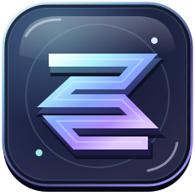
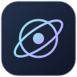
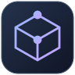
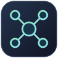
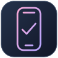

SilvOS Monogram
Marca principal / Main mark
Aurora Depth · SVG
SVG ↗
SilvOSRENASCIMENTO / BRAND STUDIO
Estudos conceituais para uma linguagem visual comum. A edição Aurora Depth introduz profundidade, reflexos e volumes vetoriais, sem renderização 3D em tempo real. Conceptual marks for a shared design language. Não representam certificação ou disponibilidade dos componentes.
Marca principal / Main mark
Aurora Depth · SVG
SVG ↗
Sistema base / Base system
Ciano + violeta
SVG ↗
Inteligência pessoal / Personal intelligence
Violeta + ciano
SVG ↗
Experiência desktop / Desktop experience
Ciano + violeta
SVG ↗
Engenharia e validação / Engineering and validation
Âmbar + cobre
SVG ↗
Memória e contexto / Memory and context
Azul + violeta
SVG ↗
Comunicação operacional / Scoped communication
Verde + ciano
SVG ↗
Cliente móvel / Mobile client
Rosa + violeta
SVG ↗Superfícies escuras, bordas discretas, contraste legível e cores funcionais. Cada símbolo comunica uma responsabilidade. Status deve ser sempre indicado em texto; cor não é prova de maturidade.
#090d19
#92e6ee
#c3a6ff
Marcas propostas para revisão; a identidade anterior permanece preservada. Proposed marks, pending review.